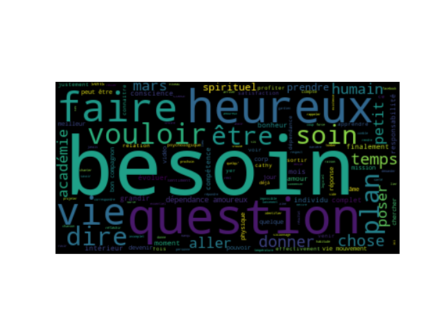

la question du jour c'est comment sortir de la dépendance amoureuse j'avais envie de répondre à cette question de
cathy weis
PER
en allant me balader un peu dans mon quartier parce que je travaille depuis 7 heures du matin dans mon bureau j'ai été enfermé devant un ordinateur toute la journée et je me disais tiens je pourrais très bien enregistrer ma réponse aujourd'hui parce que il fait un temps magnifique il ya du
soleil
LOC
il fait juste 0 degrés ici au
québec
LOC
ce qui pour le mois de mars est une température tout à fait
clément
PER
est exceptionnel nous avons encore de la neige pour au moins un mois mais
savez je me
PER
suis habitué petit à petit à cette température et à ses conditions hivernales qui dure ici six mois par an alors la question de
cathy
PER
en fait c'est une double question mais en fait vous allez voir très rapidement que les deux questions sont liées et ce n'est pas par
hasard
PER
que elle m'a posé ces deux questions en une alors elle me dit bonjour
jean jacques merci
PER
pour toutes vos vidéos qui me font du bien je pense que le but de tout individu est d'être heureux et pour ma part je dois reformater mon logiciel donc j'imagine que c'est son logiciel mental dont elle parle aujourd'hui la question qui m'inspiraient comment être heureux avec
soin
PER
et une deuxième question pour moi serait comment vaincre la dépendance désolé pour les deux questions mais c'est venu si naturellement alors qu'
ati
PER
je vous dirais que d'abord c'est tout à fait normal que les deux questions sont venues en même temps parce que effectivement elles sont liées comme nous allons voir dans quelques instants mais avant cela j'aimerais une nouvelle fois faire un petit commentaire sur la manière dont vous avez formulé votre question puisque vous dites je crois que le but de tout individu c'est d'être heureux eh bien je ne suis pas d'accord avec
ça
MISC
une fois de plus je ne pense pas dans le sens peut-être de la majorité des êtres humains mais j'irai qu'à force d'avoir réfléchi sur le sens de la vie à force d'avoir réfléchi sur ce qui fait qu'un être humain peut être heureux et peut être satisfait de sa vie j'en suis arrivé à la conclusion que notre but en tant qu'être humain ce n'est pas d'être heureux être heureux je dirais c'est un résultat temporaire qui peut arriver dans certains moments de grâce dans certains moments de je dirais de où les choses sont bien alignés mais je pense très sincèrement que le but d'un être humain c'est avant tout d'évoluer en conscience d'évoluer en amour d'évoluer en compétences et je pense que à la fin de notre vie la question qui nous sera posée c'est qu'est ce que tu as fait ta vie justement comment est-ce que tu as profité du temps qu'on t'a donné
kit
MISC
a été donné pour évoluer en conscience pour faire grandir ta conscience pour s pour être davantage conscients de de ce qui constitue tout les éléments de ton comment as-tu profiter du temps qui t'était donner pour être plus dans l'amour dans le respect dans la bienveillance vis-à-vis des individus que tu a fréquenté tout au long de ta vie et est ce que tu as profité du temps quitte était donné pour grandir en compétences pour augmenter tes compétences finalement je dirais que pour moi c'est ça le but ultime d'un individu sur cette terre et si tout ce que nous accomplissons pour évoluer en conscience en amour en compétences correspond à notre mission de vie finalement correspond à la mission notre âme si donc il ya un alignement entre ce que nous faisons et les aspirations profondes qui se trouve au niveau de notre âme eh bien peut-être que là à ce moment là nous allons ressentir du bonheur mais donc le bonheur ce n'est pas quelque chose à rechercher en tant que tel le bonheur c'est plutôt le résultat de tous les efforts que nous allons faire pour grandir en conscience à l'amour en compétences voilà mais je comprends très bien votre remarque cathy puisque effectivement qui ne veut pas être heureux mais maintenant si on recherche le bonheur pour le bonheur ben on risque de ne pas le trouver bien maintenant vous poser deux questions vous demandez comment être heureux avec soin et comment sortir de la dépendance amoureuse bien je dirais que tant que vous n'êtes pas heureuse avec vous même vous n'allez pas pouvoir sortir de la dépendance amoureuse c'est à dire que la dépendance amoureuse c'est justement le symptôme qui fait que vous compter sur quelqu'un d'autre pour être heureuse et
ça
MISC
évidemment c'est le grand piège des relations c'est de délégués à l'autre la responsabilité de nous rendre heureux et
ça
MISC
je vous dirais je vous répondrais où je ferai comme petite remarque à cette petite chanson qui est tentante à savez la chanson de mission impossible parce que demander à quelqu'un de nous rendre c'est une mission impossible pour plein de raisons que j'aurais peut-être l'occasion de développer dans d'autres mais la raison principale c'est que l'autre ne peut pas connaître en temps réel quelle est l'étendue de tous vos et même s'ils connaissent l étendue de tous vos besoins comment est-ce que l'autre pourrait les satisfaire de la manière dont vous voudriez qu'ils soient satisfaits et ça c'est toute la démarche que nous faisons au sein de l'
académie de la vie en mouvement
ORG
dans le programme je prends soin de ma vie c'est justement d'apprendre à reprendre la responsabilité de la satisfaction de l'identification et de la satisfaction de nos besoins que ce soit sur le plan physique que ce soit sur le plan relationnel que ce soit sur le plan émotionnel que ce soit sur le plan psychologique que ce soit sur le plan spirituel en fait personne ne peut prendre la responsabilité à notre place de prendre soin de nos besoins et donc finalement la dépendance affective vient très souvent du fait que cette incomplétude que nous vivons à l'intérieur de nous ce sentiment de ne pas être complet ce sentiment qui nous manque quelque chose eh bien au lieu de chercher à devenir un être plus complet ce que nous allons faire c'est que nous allons chercher quelqu'un qui va combler le de qui se trouve à l'intérieur de nous manque de pot c'est que les quelqu'un qu'on va aller chercher parce qu'on peut aller chercher plusieurs fois différentes personnes dans une vie on peut avoir plusieurs partenaires de vie dont on va tout ce dont on va tomber amoureux les uns après les autres le problème c'est que tous ces individus eux mêmes sont incomplets si vous voulez donc comment
voulez
PER
vous que quelqu'un qui est incomplet comble quelqu'un qui est une autre personne qui aime complet aussi donc c'est un truc de fou parce que finalement deux moitiés ne vont jamais faire deux unités complète puisque je vous rappelle quand même que au final ce qu'on voudrait dans une relation amoureuse c'est que chacun soit un être complet soit un être qui est dans la plénitude donc c'est une très très mauvaise idée effectivement de projeter sur l'autre et de donner à l'
o2
ORG
confié à l'autre la responsabilité de la satisfaction de nos besoins et donc là ça nous ramène à votre première question
oh katy
ORG
qui est mais comment être heureux avec soin et là j'ai déjà commencé à esquisser ma réponse puisque être heureux avec
soin ça
MISC
veut dire d'abord apprendre à être un bon compagnon pour soi mais qu'est ce que
ça
MISC
veut dire être un bon compagnon pour soi je pense que la meilleure réponse que je puisse donner mais évidemment c'est ma réponse n'est pas obligé de me croire et je vous rappelle que je ne suis ni l'évangile ni
mahomet
PER
tni
jésus-christ
PER
ni bouddha je suis un être humain qui chemine comme vous comme chacun d'entre vous et qui essaye de mettre du sens dans sa vie mais je dirais que être un bon compagnon avec soi-même qu'est ce que
ça
MISC
veut dire pour
moi ça
MISC
veut dire tout simplement devenir le gardien des choses essentielles de mon existence et pour
moi ça
MISC
veut dire beaucoup de choses
ça ça
MISC
a l'air très simple quand je le dis comme
ça
MISC
mais devenir le gardien des choses essentielles
ça
MISC
veut dire d'être capable d'identifier à tout moment qu'est ce qui me rend heureux qu est ce qui me comble qu'est-ce qui fait chanter mon coeur qu'est ce qui me fait du bien finalement sur le plan physique sur le plan psychologique et sur le plan spirituel et à partir du moment où je focalise en permanence mon attention sur le fait de prendre soin de mes besoins physiques pour avoir un corps qui soit dans la meilleure santé possible mais si mon corps est dans la meilleure santé possible
ça
MISC
donnera peut-être envie à mon âme d'y rester plus longtemps ça c'est un proverbe chinois que j'avais découvert il ya quelques années et que j'aime beaucoup 1c prends soin de ton corps pour que ton âme et envie d'y rester le plus longtemps possible pour moi c'est
ça
MISC
déjà être un bon compagnon pour moi même c'est de veiller à ne sélectionner que les attitudes y compris les habitudes alimentaires habitude de boissons et hérat qui vont faire du bien à mon corps mais je vais aussi faire en sorte que les différentes interactions que je vais avoir avec les êtres humains je vais faire en sorte que mes besoins fondamentaux mais besoin de sécurité mais besoin de reconnaissance mais besoin d'amour mes besoins de communication mais besoin d'informations mais besoin de respect mais besoin de justice mais besoin de
justesse
PER
mais besoin de considération et
c
MISC
est bien que tous ces besoins soient non seulement identifiée par mois mais que je puisse poser des actes pour que ces besoins soient respectés et soit pris en compte par les juges les personnes avec qui je suis en relation et
ça
MISC
c'est ce que nous apprenons dans l'accalmie l'
académie de la vie en mouvement idem
ORG
pour mes besoins spirituels mes besoins spirituels
ça
MISC
n'a rien à voir avec les besoins religieux en fait mes besoins spirituels
c
MISC
est ce que je consacre du temps conscient dans mon existence pour que ma vie ait du est ce que je fais des choix de vie qui sont porteurs de sens et qui font chanter mon coeur qui me ravit ce haut niveau de l'âme parce que effectivement ce que je fais
me
MISC
fait grandir me donne un sentiment de grandir à l'intérieur - et plus je vais faire ça et
ça
MISC
je peux vous parler par expérience puisque maintenant je commence à avoir un certain âge plus je fais
ça
MISC
plus je me rends compte que je n'ai moins besoin des autres parce que j'ai moins j'ai de moins en moins de vide à l'intérieur de moi et moins j'ai de vide à l'intérieur de moi - je vais projeter sur l'autre des attentes qui de toute façon ne seront jamais satisfaite et je serai toujours déçus des autres parce que les autres même s'ils ont la meilleure volonté du monde ne vont pas pouvoir connaître en temps réel quels sont mes besoins sur le plan physique psychologique et spirituel
comprenez ça
MISC
et donc du coup je ne vais plus déléguer non plus aux autres la responsabilité de prendre soin de mes du coup je deviens heureux avec
moi et je ne
MISC
suis plus susceptibles de tomber dans la dépendance de l'autre ou dans la dépendance amoureuse il y aura encore beaucoup d'autres choses par rapport à la dépendance amoureuse et si
ça vous
MISC
a dit ça vous intéresse je vous encourage à me poser d'autres questions sur le même domaine et
bah sinon
MISC
mais je vous donne rendez-vous pour bientôt le
prg
ORG
la prochaine le prochain lancement de l'
académie de la vie en mouvement puisque j'
ORG
ouvre les portes de l'
académie
ORG
le lundi 19 mars 2018 donc si vous entendez cette vidéo plus tard la vidéo sera encore valable par contre l'ouverture de l'
académie de la vie en mouvement ce sera pour mars 2019
ORG
ou mars 2020 d'où mars 2021 en tout cas c'est tous les mois de mars que nous faisons un nouveau lancement de l'
académie
ORG
et
sinon merci
PER
pour vos questions merci de laisser votre prénom lorsque vous posez une question et merci de
liker merci
PER
de partager ses vidéos vous êtes de plus en plus nombreux à suivre cette petite série improvisé au départ de questions du jour et je me rends compte que la ce a déjà dépassé sur
youtube
MISC
plus de 22 mille visionnages en quelques jours en un peu plus d'une semaine sur ma page
facebook
MISC
facebook c'est plus de 50 mille visionnages qui a eu lieu donc j'en suis extrêmement ravi parce que j'ai l'impression que
ça
MISC
fait du ça vous fait du bien ça vous met du baume au coeur en tout cas c'est ce que vous me dites et je serai très heureux de vous retrouver pour une autre question du jour demain